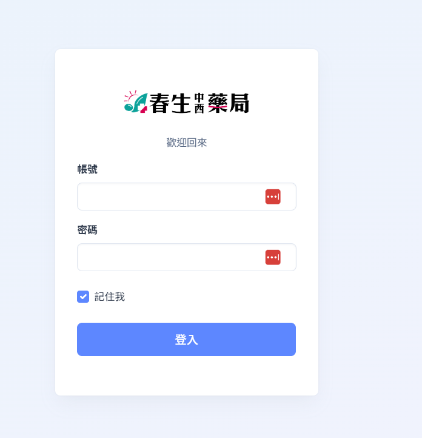
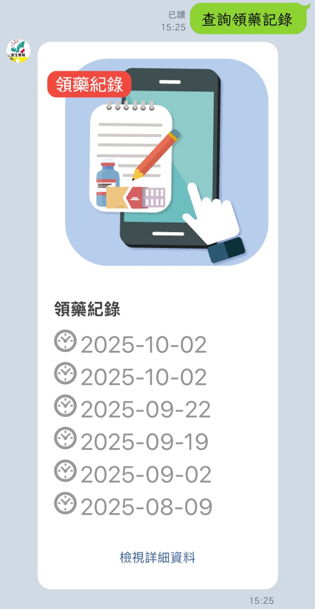
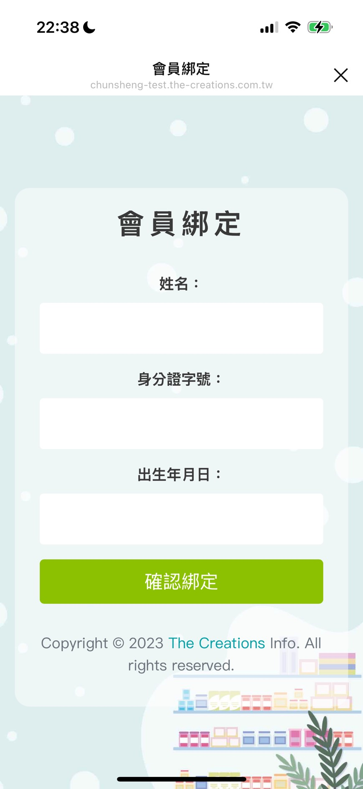
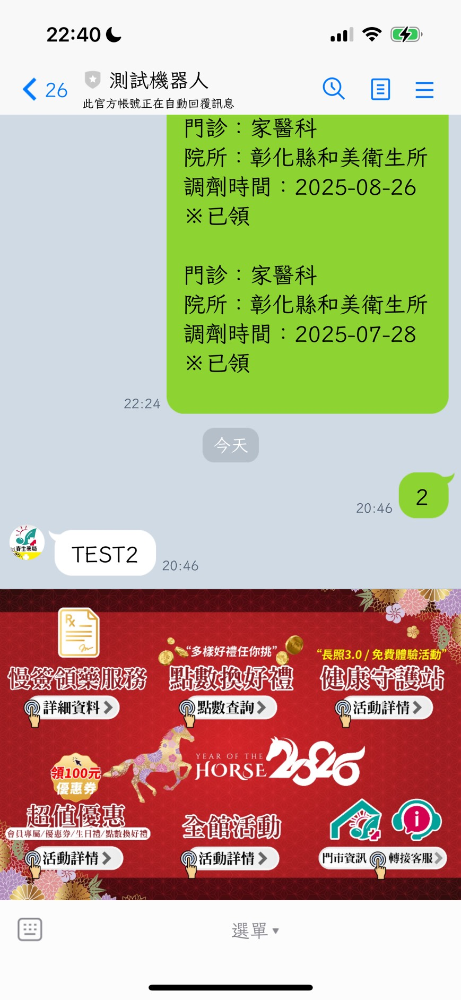
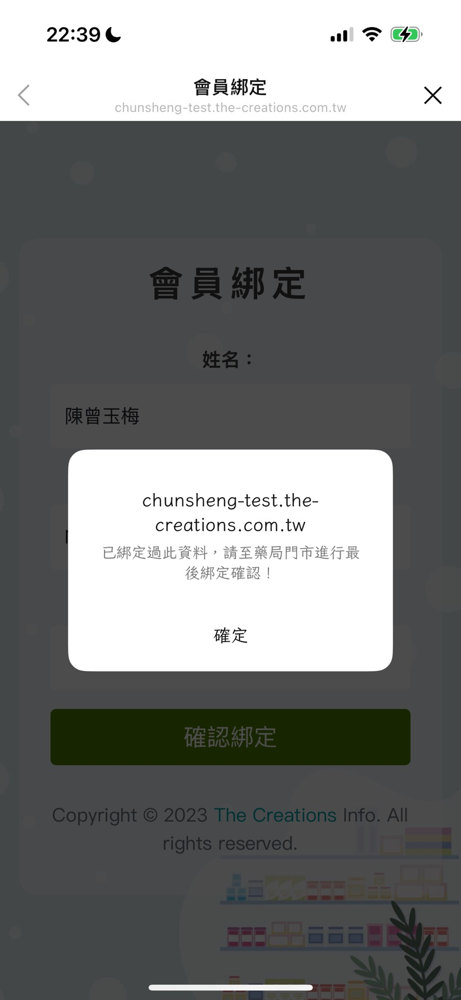
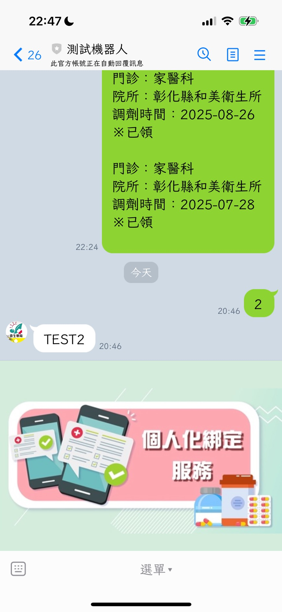

USER MANUAL
V1.0
Mr.P 藥局管理系統
LINE@ 官方帳號串接功能操作手冊
開發廠商：創盛國際資訊科技有限公司
手冊製作：James Peng
手冊簡介
歡迎使用 Mr.P 藥局管理系統的 LINE@ 串接模組。本手冊將引導您完成從後台設定到前台會員綁定的完整流程，讓您的藥局能透過 LINE 官方帳號提供更優質的會員服務，包含領藥通知、紀錄查詢與點數管理。
1.1 系統登入
請使用系統配發之管理員帳號密碼進行登入。目前提供之三組帳號權限皆相同，均可執行完整管理功能。

系統登入介面
1.2 系統首頁
登入後即可看見系統儀表板，此處提供 LINE@ 綁定狀態 的即時統計概覽。

1.3 LINE 綁定管理
此功能位於左側選單的「管理 LINE 綁定」。當用戶於 LINE 官方帳號填寫資料後，管理員可在此進行審核。

自動綁定
當用戶輸入的「姓名、身分證字號、生日」與系統資料完全相符時，系統將自動完成綁定，無需人工介入。
人工綁定
若資料有誤，狀態顯示「未綁定」。請點選「綁定」，輸入該客戶在藥局系統的「客戶代號」即可連結。

常見錯誤排除
- 綁定失敗：通常是客戶代號輸入錯誤，請再次確認 SA210 資料。(參照圖：image 4.png)
- 重複綁定：若顯示此客代已綁定，請先搜尋該代號，確認是否已被其他 LINE 帳號佔用。(參照圖：image 5.png)
1.4 領藥通知管理
系統依據 DR250 調劑作業資料自動發送。建議設定時間應晚於當下 10 分鐘以上，以免錯過排程。

1.5 特殊功能設定
查詢領藥紀錄
用戶可查詢自己及附屬親友在藥局的處方紀錄。

查詢點數
用戶可即時查看剩餘的會員紅利點數。

1.6 受眾名單管理
方式一：由 LINE 後台產生
直接在後台設定篩選條件（如消費金額），系統將自動抓取符合條件且已綁定的客戶。

*注意：儲存後需等待約 10 分鐘同步。
方式二：由藥局系統 (簡訊助理) 產生
- 在簡訊助理篩選出目標客戶。
- 點選「產生 LINE@ 名單」匯出專用檔。
- 將檔案匯入 LINE@ 官方帳號後台。

2.1 會員綁定流程

1
點選綁定

2
輸入資料
3
綁定成功

4
會員選單
2.2 綁定狀態說明

需人工綁定
資料與系統不符，需聯繫門市

重複綁定
此資料已被其他帳號綁定

未綁定
訪客模式，功能受限